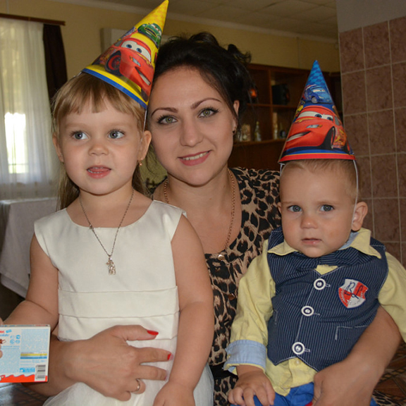
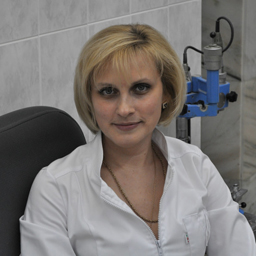

- главная
- что это?
+ 7 (495) 64-111-63
info@vilovit.ru
Стержень Виловит® Источник Вашего Долголетия!
Отзывы
Оставить отзыв
Мучила изжога, постоянная тяжесть в животе. После того как начала пить воду со стержнем, заметила улучшения. Пью уже месяц и чувствую себя более здоровой.
У нас молодая семья с двумя маленькими детьми. К качеству воды относимся очень придирчиво. Экспериментируем с использованием различных фильтров и очистителей. Так как маленькие дети, то наличие в доме простудных заболеваний и вирусных инфекций частое явление. Вода является частью для формирования здорового иммунитета, поэтому решили попробовать стержень для воды виловит. Единственно, что используем его в стеклянной посуде. На данном этапе можем отметить, что за все лето ни кто в семье не болел но показательным будет межсезонье, когда обостряются все болезни. Вода имеет приятный вкус, без посторонних запахов и примесей.

Аленка
25 лет, Москва
Наконец-то добралась в суматохе материнства написать свой отзыв. Я не знаю, может быть это эффект плацебо, но я в восторге. Ещё во время беременности у меня стала шелушиться кожа на руках. Ну я, списав на недостаток витаминов не обращала на это внимания, но после родов, и полноценного грудного вскармливания эта проблема усилилась в разы. Кожа на руках стала трескаться и болеть!Стержень ВилоВит мне подарила моя свекровь, и спасибо ей за это. Кожа улучшилась, трещин практически не осталось. Рекомендую всем!
Недавно стала употреблять воду с использованием стержня Виловит. Хочу отметить, что начала намного себя лучше чувствовать. С утра встаю бодрой и остаюсь на целый день полна энергией. До использования стержня была вялой и все время хотелось спать. Кроме этого заметила, что мой обмен веществ понемногу стал восстанавливаться. Раньше я очень мало ела, так как аппетита не было совсем, теперь другое дело, кроме отличного самочувствия появился хороший аппетит и самое главное, ем и не полнею.
Заказывала стержень «Виловит» около месяца назад, получила посылку на почте через неделю (я считаю, это быстро!), употребляем обогащенную воду всей семье уже 3 недели. Могу сказать, что хуже никому не стало, дети активные и энергичные, супруг говорит, что разницы не видит, ну а мне, с моим гастритом, вроде бы стало полегче. Да и общее состояние улучшилось, прояснилось в голове :)
По совету своей давней подруги решила попробовать приобрести стержень для живой воды Виловит. Зашла на сайт, быстро оформила заказ (мне даже сделали неплохую скидку на товар, чем с самого начала приятно удивили). Доставку сделали очень быстро, курьер из фирмы даже от чаевых отказался). Вот уже пользуемся пару дней, что-то определенное пока сказать не могу, но вода кажется вкуснее и бодрит. Надеюсь на продолжения результата.
Решила почистить организм и убрать лишний вес. Для этого свой день стала начинать с выпитого стакана активированной воды и увеличила количество выпитой жидкости. Для получения обогащенной водородом воды купила магниевый стержень Виловит. Через 2 недели ушло 4 кг, улучшилось самочувствие, внешне посвежела. Перестала мучить мигрень и остеохондроз. Хочу так же отметить вежливость менеджеров магазина, быструю обработку заказа и доставку.
Последнее время у меня была постоянная слабость, головокружение, тошнота. Принимал витамины, но они не сильно помогали. И тут мне посоветовали воду со стержнем Vilovit. Изменения произошли уже после первых 2 недель употребления. Я стал чувствовать себя бодрее, а головокружение и тошнота совсем исчезли. Vilivot — это очень качественный и полезный продукт. Приобретайте и вы станете себя чувствовать гораздо лучше!
Вопрос о здоровье для меня на первом месте. Заказал стержни по почте. После недели стали заметны первые изменения в организме, кишечник стал чиститься, прибавилось ощутимо бодрости. «Виловит» оказался эффективен, несмотря на то что он не является лекарством.
После месяца употребления воды заметно снизилось давление, стало меньше шумов в голове, наладился стул, появился небольшой приток бодрости. Стала пить меньше таблеток. Рекомендую.
Пью воду не так давно. Не знаю совпадение это или нет, но ногти на руках стали более гладкими, с утра встаю на работу бодрячком. Чувствую прилив сил и энергии, приятно. Буду пить дальше и наблюдать за своим состоянием.

Алена
40 лет, г. Москва
Давно уже слышала много хороших отзывов об этом стержне для воды, но все руки никак не доходили его приобрести и на себе испытать. Чуть больше двух недель назад я его все-таки купила. Ну что я могу сказать? Сейчас я просто не понимаю, как без него можно было жить. Наконец-то решилась проблема с повышенным давлением, наладился стул. У мужа показатель сахара в крови значительно понизился. Будем продолжать использовать!